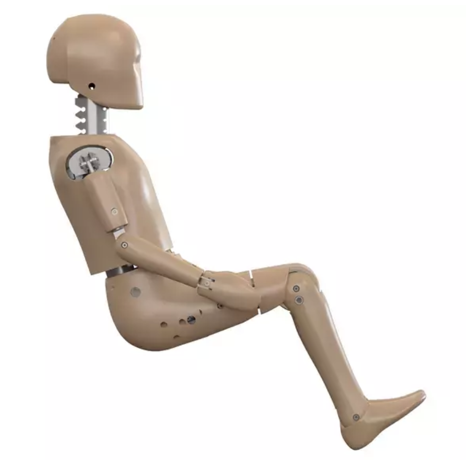
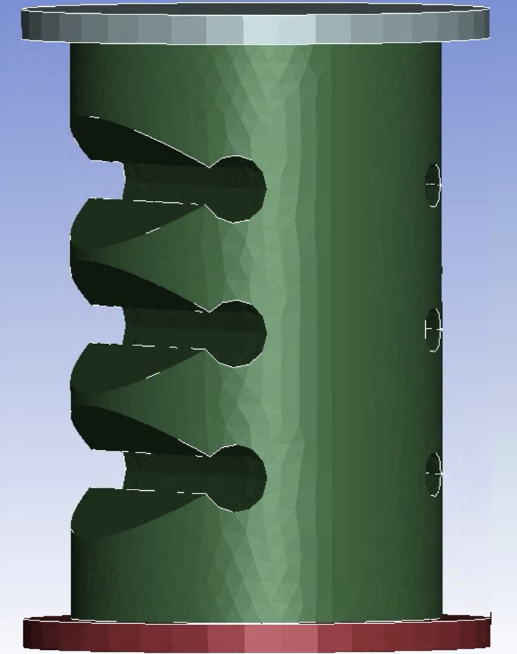
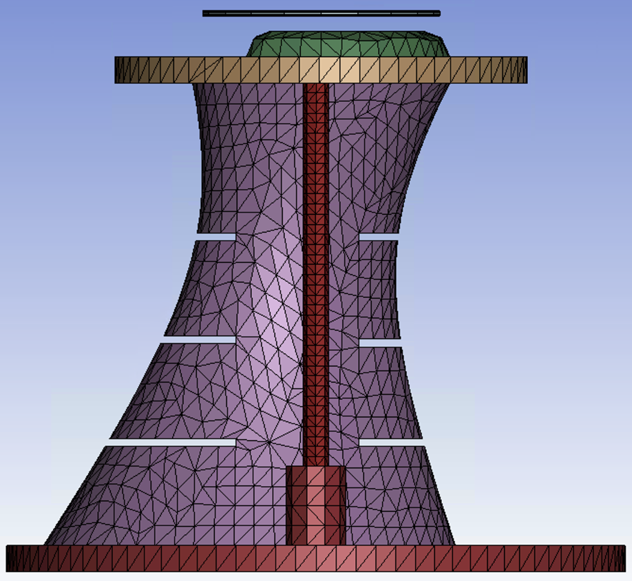
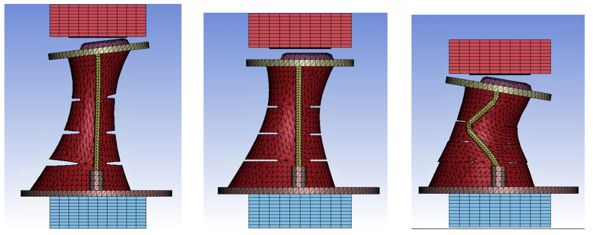
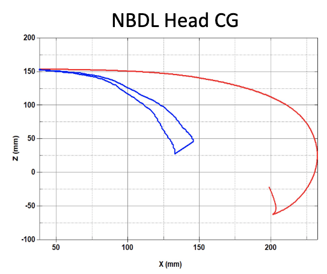
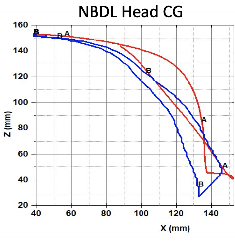
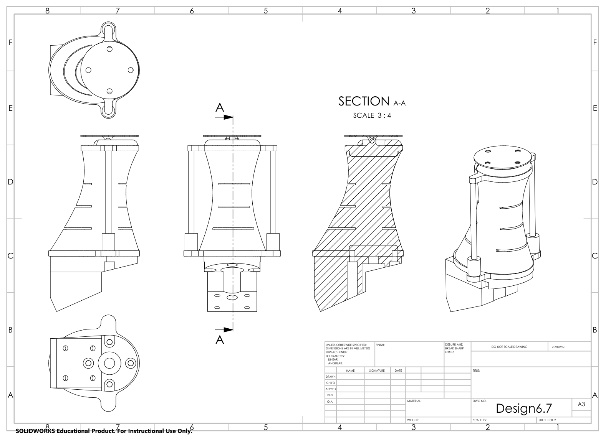
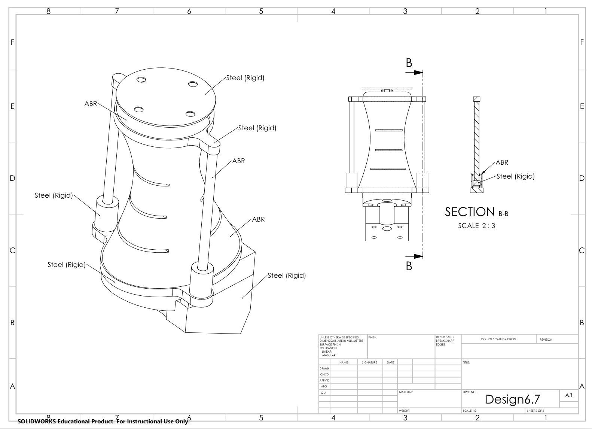
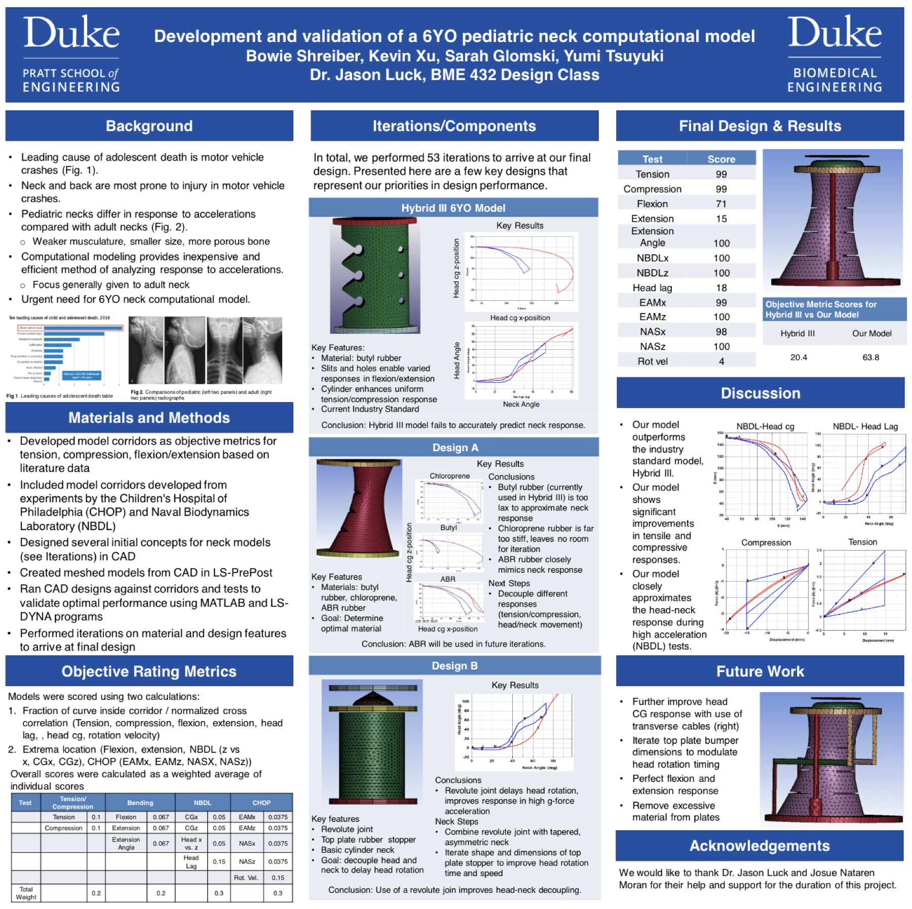

Using FEA to Protect Children in Car Crashes
During my senior year, I enrolled in a senior design course led by Dr. Jason Luck, who is renowned for his research on pediatric neck biomechanics and injury response. Given that car crashes were a leading cause of adolescent fatalities in the 2010s, it became clear that accurately representing the biomechanical responses of young bodies in crash tests was crucial. Whiplash, in particular, is a complex injury that necessitates an accurate neck model in crash test dummies.

To address this, we used LS-DYNA, a sophisticated finite element solver commonly employed in the automotive industry to simulate crash scenarios. Our goal was to evaluate the performance of the current Hybrid-III neck model against real pediatric neck responses documented in the literature.

Through rigorous testing and iterative design, our team developed a new neck model that significantly outperformed the Hybrid-III in several key tests. Our innovative design featured a nonlinear shape, horizontal slits, vertical cables, and a pin joint at the top, all aimed at better simulating the anatomical neck.


We conducted a series of tests in LS-DYNA, including compression, tension, extension, and flexion, to evaluate the new model’s performance. Additionally, we replicated real-life tests from a study at the Naval Biodynamics Laboratory (NBDL), which involved tracking the center of gravity (CG) of children’s heads during go-kart-like sled decelerations—similar to bumper car collisions.
The results of our simulations were compared against the study data, represented by a blue corridor in the plots below. The Hybrid-III model, shown in red, consistently fell outside this corridor, indicating its inadequacy. In contrast, our neck model demonstrated a much closer alignment with the expected data.

Although not flawless, our model showed marked improvement, achieving a performance score of 79.8 out of 100 compared to the Hybrid-III’s 65.8 out of 100, as determined by cross-correlation analyses.

My primary role involved creating and refining the CAD models in SolidWorks throughout the iteration process. By the end of the semester, I produced detailed engineering drawings of both the individual components and the complete assembly, which are illustrated below. My contributions were pivotal in quickly adapting the model based on iterative test results.


At the semester’s end, my team and I presented our findings at an engineering poster symposium, raising awareness about adolescent motor vehicle safety and engaging in insightful discussions with Duke students and faculty.
